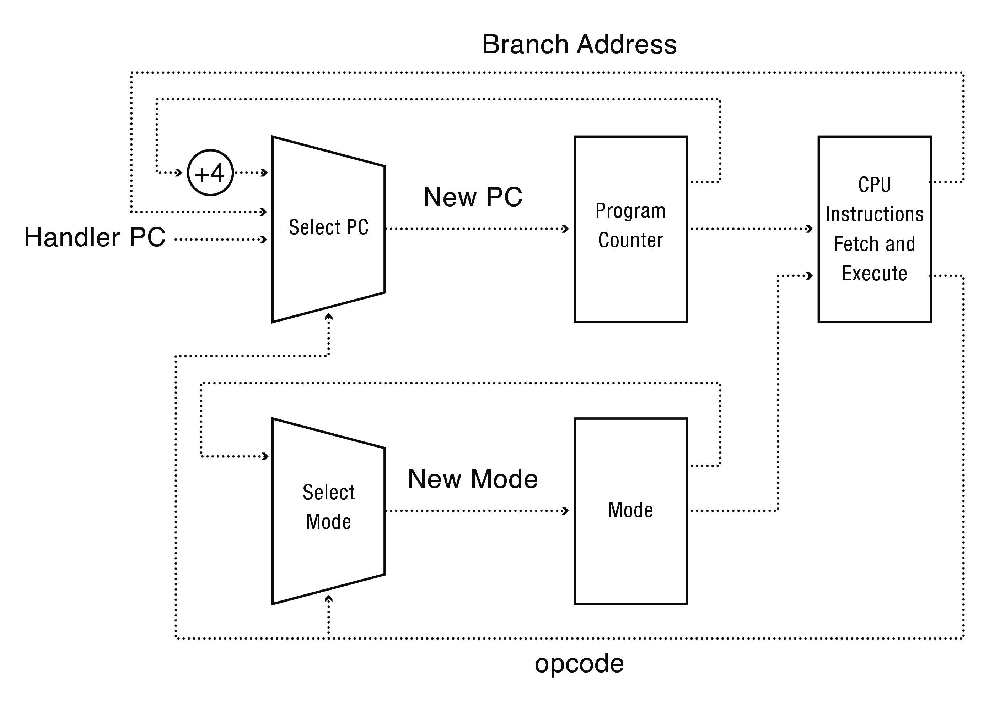

Los Sistemas Operativos
Como se ha visto, para que un sistema operativo pueda soportar la ejecucion de un Kernel se deben cumplir 3 condiciones:
- System Calls.
- Modo de operación dual.
- Timer Interrupts (Interrupciones por temporizador).
Más Sobre el Kernel
Según VAHALIA, Uresh en su libro “UNIX internals: the new frontiers” de editorial Pearson Education India, 2008:
Implementa el Modelo de Procesos y otros servicios del sistema.
Reside en el disco en un archivo típicamente llamado /vmlinuz, /vmunix o /unix (dependiendo del vendedor de UNIX).
- Cuando el sistema se inicia, éste carga al Kernel desde el disco usando un procedimiento especial llamado bootstrapping.
- El Kernel inicializa el sistema y setea el ambiente para correr procesos.
- Entonces, el Kernel crea algunos procesos iniciales, los cuales a su vez crean otros procesos.
- Una vez cargado en la memoria el Kernel permanece allí hasta que se apague la computadora.
- Él administra los procesos y les provee de varios servicioas (acceso a disco, acceso a network, acceso a usb, etc).
Una versión primitiva del kernell de Unix:

Una versión moderna del Kernel de Unix:

Alguna Funcionalidad que provee el Kernel en el sistema operativo UNIX:
-
Los procesos de Usuario explícitamente requieren servicios al Kernel a través del uso de las System Call, que es el componente central del API (Application Programming Interface) de UNIX. El Kernel ejecuta los pedidos en nombre de los procesos que utilizan las System Calls, en forma más esquemática ver Figura.
-
Algunos comportamientos inusuales, que algunas acciones de los procesos pueden llegar a ocasionar (como por ejemplo intentar dividir por cero, causar overflow al execution stack), causan excepciones en el hardware. Las excepciones de hardware requieren la atención del Kernel. Éste las maneja en nombre del proceso en el cual se generó/raron la/s excepción/nes.
{kind=link}
¿Qué sucede cuando el Kernel falla?

System Calls
Una System Call no es más que una ilusión de hacer creer que el kernel del S.O. es una biblioteca de rutinas que pueden ser utilizadas por los proceso.
Para los procesos, el Kernel provee un conjunto de rutinas con sus argumentos que pueden ser utilizadas por cualquier otra rutina. La implementación de dichas System Calls es totalmente transparente y se utilizan como caja negra.
Unix System Calls
| GENERAL CLASS | SPECIFIC CLASS | SYSTEM CALL |
|---|---|---|
| File Structure | Creating a Channel | creat() |
| Related Calls | open() | |
| close() | ||
| Input/Output | read() | |
| write() | ||
| Random Access | lseek() | |
| Channel Duplication | dup() | |
| Aliasing and Removing | link() | |
| Files | unlink() | |
| File Status | stat() | |
| fstat() | ||
| Access Control | access() | |
| chmod() | ||
| chown() | ||
| umask() | ||
| Device Control | ioctl() | |
| Process Related | Process Creation and | exec() |
| Calls | Termination | fork() |
| wait() | ||
| exit() | ||
| Process Owner and Group | getuid() | |
| geteuid() | ||
| getgid() | ||
| getegid() | ||
| Process Identity | getpid() | |
| getppid() | ||
| Process Control | signal() | |
| kill() | ||
| alarm() | ||
| Change Working Directory | chdir() | |
| Interprocess | Pipelines | pipe() |
| Communication | Messages | msgget() |
| msgsnd() | ||
| msgrcv() | ||
| msgctl() | ||
| Semaphores | semget() | |
| semop() | ||
| Shared Memory | shmget() | |
| shmat() | ||
| shmdt() |
Modo Dual de Operaciones
El modo de operacion dual, es un mecanismo que proveen todas las computadoras modernas.
En un mundo Ideal …. el esquema básico de un microprocesador podría ser el siguiente:

Intel 8088 no tenía bit de modo - no tenía dual mode - esa es la historia detrás de MSDOS.
La realidad:

Modos
En el caso de la arquitectura x86 la misma provee 4 modos de operaciones via el hardware. Estos modos están numerados entre 0 y 3.
Los modos más utilizados por los sistemas operativos son el modo 0 (modo supervisor o modo Kernel) y el modo 3, llamado modo “Usuario” o “User Mode” dado que este mecanismo es proveído por el hardware cada instrucción a ser ejecutada el mismo chequea en que modo de operación se encuentra.
Existen dos modos operacionales utilizados de la CPU :
- Modo Usuario o User Mode: que ejecuta instrucciones en nombre del usuario
- Modo Supervisor o Kernel o Monitor: ejecuta instrucciones en nombre del Kernel del S.O. y estas son instrucciones privilegiadas.

Esta diferencia entre los modos operacionales de un procesador equivale a un bit en el registro de control del procesador.
La Primer Abstraccion: El Proceso
Una vez que se edita un programa en cualquier lenguaje de programación se debe realizar el proceso de compilacion para poder obtener un programa ejecutable.
#include <stdio.h>
int main() {
printf("hello, world\n");
}
Este proceso que en la actualidad suele condiderarse como un unico proceso, esta separado en varias etapas en las cuales se utilizan distintas herramientas y se obtienen distintos archivos en distintos formatos hasta alcanzar el formato ejecutable. Sin este proceso el programa se limita a ser:

Las partes del proceso de compilacion son 4 fases, que utilizan 4 herramientas para llevar a cabo cada una de estas fases. Estas herramientas son:
- el preprocesador.
- el complidor
- el ensamblador
- el link editor o linker.
Estas en conjunto son conocidas como un sistema de compilacion.
La Compilación
-
La fase de procesamiento. El preprocesador (cpp) modifica el codigo de fuente original de un programa escrito en C de acuerdo a las directivas que comienzan con un caracter(#). El resultado de este proceso es otro programa en C con la extencion .i
-
La fase de compilacion. El compilador (cc) traduce el programa .i a un archivo de texto .s que contiene un programa en lenguaje assembly.
-
La fase de ensablaje. A continuación el ensamblador (as) traduce el archivo .s en instrucciones de lenguaje de máquina empaquetándolas en un formato conocido como programa objeto realocable. Este es almacenado en un archivo con extensión .o
-
La fase de link edicion. Generalmente los programas escritos en lenguaje C hacen uso de funciones que forman parte de la biblioteca estandar de C que es provista por cualquier complilador de ese lenguaje. Por ejemplo la funcion printf(), la misma se encuentra en un archivo objeto precompilado que tiene que ser mezclado con el programa que se esta compilando, para ello el linker realiza esta tarea teniendo como resultado un archivo objeto ejecutable.

- Programador edita código fuente
- El compilador compila el source code en una secuencia de instrucciones de máquina y datos llamada Programa
- El compilador genera esa secuencia y posteriormente se guarda en disco: programa ejecutable
En este punto se tiene un programa capaz de ser ejecutado por una computadora, es función del sistema operativo hacer que este se ejecute, para ello existe el concepto de proceso.
El Sistema Operativo más precisamente el Kernel se encarga de:
- Cargar instrucciones y Datos de un programa ejecutable en memoria.
- Crear el Stack y el Heap 1
- Transferir el Control al programa
- Proteger al SO y al Programa
Un programa es algo sin vida, un conjunto de instrucciones y datos que esperan en algún lugar del disco para saltar a la acción!!!
- Y el Sistema Operativo es quien toma ese puñado de bytes y es el SO que transforma ese programa en algo útil, mediante el Kernel.
- Uno nunca tiene que ser consciente si la CPU está disponible, etc. sólo ejecuta el programa.
Un Proceso
“Un proceso es la ejecución de un programa de aplicación con derechos restringidos; el proceso es la abstracción que provee el Kernel del sistema operativo para la ejecución protegida”- Dahlin
“Es simplemente un programa que se está ejecutando en un instante dado” - Arpaci
“Un Proceso es la instancia de un programa en ejecución” - Vahalia
Por ahora quedémonos con estas definiciones…
Un proceso necesita que el kernel del sitema operativo le otorgue permisos para:
- una escritura o una lectura en un disco.
- hacer algún cambio en la configuración del harware
- intentar acceder a algun área de memoria de otro proceso.
Particularmente el concepto de proceso es el más importante de todos los conceptos que se ven en sistemas operativos.
Entonces:
“un proceso es basicamente una abstraccion de un programa en ejecucion.”
Un proceso esta formado, entre otras cosas, por 4 secciones llamadas: .code, .data, .heap, .stak.

Todas estas secciones pertenecientes a un proceso se denominan espacio de direcciones del proceso.
Para ejecutar un programa el sistema operativo copia las instrucciones en la sección .code y los datos en la sección .data, desde el programa ejecutable residente en disco hacia la memoria física, ademas el sistema operativo setea una region de memoria llamada execution stack (.stack), que mantiene el estado de las variables locales durante las llamadas a los procedimientos. EL sistema operativo tambien setea una region de memoria llamada heap, destinada a alojar cualquier estructura de datos alocada en forma dinamica que el programa pueda necesitar.

Se ha de tener en cuenta que el Kernel en si mismo tambien es un proceso y que la abstraccion del proceso provee ejecucion, aislamiento y proteccion. Estos tres conceptos pueden merecer varios capitulos de un libro. El sistema operativo lleva la contabilidad de todos los procesos que se estan ejecutando en la computadora mediante la utilizacin de una estrucutura llamada Process Control Block o PCB. La PCB almacena toda la informacion que un sistema operativo debe conocer sobre un proceso en particular:
- Donde se encuentra almacenado en memoria.
- Donde la imagen ejecutable esta en el disco.
- Que usuario solicito su ejecucion.
- Que privilegios tiene ese proceso.
La virtualización
La virtualización de proceso es la forma de virtualización más primitiva, consiste en dar la ilusión de la existencia de un único procesador para cualquier programa que requiera de su uso. De esta forma, se provee:
Simplicidad en la programación
- Cada proceso cree que tiene toda la memoria/CPU.
- Cada proceso cree que todos los dispositivos le pertenecen.
- Distintos dispositivos parecen tener el mismo nivel de interfaces.
- Las interfaces con los dispositivos son más potentes que el bare metal.
Aislamiento frente a Fallas:
- Los procesos no pueden directamente afectar a otros procesos.
- Los errores no colapsan toda la máquina.
¿Cómo se provee la ilusión de tener varios CPUs?
El SO crea esta ilusión mediante la virtualización de la CPU a través del kernel.

Viéndolo desde el punto de vista de la abstracción y virtualización:

- Un ejemplo sencillo virtualización de proceso nos muestra que si bien la computadora está ejecutando mas de un proceso todos creen que la CPU (Unidad Central de Procesamiento) está disponible en forma exclusiva para ese único proceso.
El Proceso: por dentro
El concepto de proceso es la más bella de las abstracciones que los constructores de sistemas operativos han creado. La idea general detrás de la abstracción es la de cómo virtualizar una CPU o procesamiento, es decir cómo hacer para que un único procesador actúe como tal para varios programas que requieren ser ejecutados utilizando el mismo hardware, en este caso un microprocesador.
«««< HEAD El proceso es la abstracción que provee el Kernel del sistema operativo para la ejecución protegida de un programa. ======= En aquella ilusión 2 entra en juego el KERNEL. Pero… ¿Qué es el Kernel?
860fec761f2897c0d1558c954a43e2e772049f0d
Un Proceso necesita permisos del Kernel del SO para:
- Acceder a memoria perteneciente a otro proceso.
- Antes de escribir o leer en el disco.
- Antes de cambiar algún seteo del hardware del equipo.
- Antes de enviar información a otro proceso.
Pero además el S.O. crea la ilusión de la existencia de varios cientos o miles de procesadores, cuando en realidad tiene uno solo, mediante la virtualización de la CPU …. ¿Cómo? Con el concepto de Proceso que es la ilusión creada para la virtualización de la CPU. El Kernel del S.O. provee esa abstracción.
Volvemos al Modo Dual de Operaciones
Arquitectura de Von Newman: Instruction Fetch

El ciclo de una instrucción en una arquitectura de Von Newman:
- Obtener la instrucción (Fetch)
- Decodificar la instrucción (Decode)
- Ejecutar la instrucción (Execute)
- CP = Próxima Instrucción

«««< HEAD Para poder proveer un mecanismo que combine ejecucion protegida y aislamiento el Kernel del sistema operativo debe ser provisto de 3 mecanismos por el Hardware: =======
El Proceso: por dentro
El concepto de proceso es la más bella de las abstracciones que los constructores de sistemas operativos han creado. La idea general detrás de la abstracción es la de cómo virtualizar una CPU o procesamiento, es decir, cómo hacer para que un único procesador actúe como tal para varios programas que requieren ser ejecutados utilizando el mismo hardware, en este caso un microprocesador.
860fec761f2897c0d1558c954a43e2e772049f0d
-
Instrucciones Privilegiadas: Cualquier instruccion potencilmente no segura esta prohibida en el modo usuario.
-
Proteccion de memoria: Todos los accesos a memoria fuera de la region de memoria del proceso estan prohibidos cuando se esta ejecutando en el modo usuario.
-
Interrupciones temporales: Teniendo en cuenta lo que hace cada proceso el Kernel tiene que tener una forma periodica de retomar el control desde el proceso que se esta ejecutando.
Instrucciones Privilegiadas
El aislamiento de los procesos es posible solamente si existe una forma de limitar a los programas que estan corriendo en modo usuario de que cambien su propio nivel de privilegio.
Para ello existen dos tipos de instrucciones, las intrucciones privilegiadas que son aquellas que solo el Kernel del sistema operativo puede ejecutar, y las otras instrucciones que pueden ser ejecutadas en modo usuario.
Por eso el Kernel del sistema operativo puede ejecutar el set comnpleto de instrucciones de Hardware, mientras que las aplicaciones ejecutandose en modo usuario solo pueden utilizar un subconjunto de las instrucciones que provee el Hardware.
LGDT Loads an address of a GDT into GDTR
LLDT Loads an address of a LDT into LDTR
LTR Loads a Task Register into TR
MOV (Control Register) Copy data and store in Control Registers
LMSW Load a new Machine Status WORD
CLTS Clear Task Switch Flag in Control Register CR0
MOV (Debug Register) Copy data and store in debug registers
INVD Invalidate Cache without writeback
INVLPG Invalidate TLB Entry
WBINVD Invalidate Cache with writeback
HLT Halt Processor
RDMSR Read Model Specific Registers (MSR)
WRMSR Write Model Specific Registers (MSR)
RDPMC Read Performance Monitoring Counter
RDTS Read time Stamp Counter
Que pasa si una aplicación en modo usuario intenta realizar operaciones que solo estan permitidas en modo Kernel? El resultado es que tal acción causará una excepción de procesador.
Proteccion de Memoria
Para que un proceso se ejecute tiene que estar residente en memoria, pero a su vez el sistema operativo tiene que estar residente en memoria.
- El proceso tiene que estar en memoria para poder ejecutarse.
Mientras que:
- El sistema operativo tiene que estar ahí para:
- iniciar la ejecucion del programa
- manejar las interrupciones
- y/o atender las systems call.
Es más, otros procesos podrían estar simultaneamente en memoria para poder compartir la memoria de forma segura, para ello el sistema operativo tiene que poder configurar el hardwre de forma tal que cada proceso pueda leer y escribir solo su propia memoria (No la memoria del sistema operativo tampoco la de otros procesos. Ya que sino el proceso en cuestión podría incluso modificar al Kernel del sistema operativo. Para ello el Hardware debe proveer un mecanismo de proteccion de memoria, (que se veran detalladamente mas adelante).

Uno de estos mecanismos es denominado Memoria Virtual, la memoria virtual es una asbtracción por al cual la memoria física puede ser compartida por diversos procesos.
Un componente clave de la memoria virtual son las direcciones virtuales, con las direcciones virtuales, para cada proceso su memoria inicia en el mismo lugar, la direccion 0.
Cada proceso piensa que tiene toda la memoria de la computadora para si mismo, si bien obviamente esto en la realidad no sucede. El hardware traduce la direccion virtual a una direccion fisica de memoria.
Traducción de Direcciones:
Se traduce una Dirección Virtual (emitida por la CPU) en una Dirección Física (la memoria). Este mapeo se realiza por hardware, más especificamente por Memory Management Unit (MMU).

Virtualización de Memoria 3

###Interrupciones de tiempo El aislamiento de procesos también hace que se requiera un mecanismo de hardware para que el Kernel del sistema operativo pueda periodicamente retomar el control que está teniendo un proceso.
Cuando el sistema operativo inicia un programa en modo usuario el proceso es libre de ejecutar cualquier instrucción o cualquier función dentro de la región de la memoria del proceso.
El proceso cree que tiene el completo control del hardware dentro de los límites de su region de memoria. Esto es una ilusión, si por ejemplo, el proceso entra en un ciclo infinito, el sistema operativo tiene que ser capaz de retomar el control.
Para ello todas las computadoras incluyen un dispositivo llamado hardware timer que puede ser seteado para interrumpir al procesador después de un periodo de tiempo, cada procesador tiene un timer interrupt. Cuando el timer interrupt sucede, el hardware trasnfiere el control desde el proceso del usuario al kernel corriendo en modo Kernel, existen varios tipos de interrupciones, por ejemplo, las de entrada y salida.
Que haya una interrupcion de tiempo o de otras caracteristicas no implica que haya opcurrido un error; en la mayoría de los casos una vez que se dió la interrupcion se vuelve a setear el tiempo para la proxima interrupcion y el sistem operativo continua con la ejecucion del proceso:
- seteando el modo
- el program counter
- los registros con los valores que tenian inmediatamente antes que la interrupcion ocurriera.
Todos los procesadores poseen un dispositivo de hardware llamado Interrupciones de Tiempo. Una Interrupción de Tiempo permite que el procesador sea interrumpido después de un determinado lapso de tiempo. Cada procesador tiene su propio contador de tiempo. Si el procesador es multicore cada core tiene sus propio contador de tiempo individual.
El reseteo del timer es una instrucción privilegiada que puede ser utilizada en modo kernel.
$ cat /proc/timer_list
De Tipos modo de transferencia
Es necesario saber como se trasiciona de user mode a kernel mode a viceversa. Este tipo de trasnsición no son eventos raros y por ende deben tener un mecanismo que sea seguro y rápido y que además no de lugar para programas maliciosos o con errores que pueden intencinalmente ser inseridos y corropmper el Kernel.
Pasar de User Mode a Kernel Mode
Hay 3 razones por la cual el Kernel retomaria el control del proceso que se esta ejecutando: interrupciones, excepciones del procesador y system calls. Las primeras ocurren de forma asincrónica, las otras 2 ocurren de forma sincrónica.
- Interrupiones. Una interrupción es una señal asincronica que le avisa al procesador que algún evento externo ha ocurrido y requiere su atención.
Mientras el procesador se encuentra ejecutando instrucciones también chequea la ocurrencia de interrupciones, si una de ellas sucede:
- el procesador suspende cualquier instruccion que esta en proceso
- almacena todos los estados actuales de ejecución
- comienza a ejecutar un manjeador de instrucciones que esta especialmente designado para el tipo de interrupcion que sucedio en el Kernel.
Cada tipo diferente de interrupción necesita su propio manejador.
-
Excepciones del procesador. Una excepción del procesador es un evento de Hardware causado por un programa ejecutandose en modo usuario cuyo comportamiento causa la trasnferencia del control al Kernel por ejemplo una excepcion de procesador ocurre cada vez que un proceso quiere ejecutar una instruccion privilegiada o acceder fuera de su propio espacio de memoria. Otra por ejemplo podria ser cuando se divide un numero entero por cero.
-
System Calls. Los procesos corriendo en modo usuario tambien pueden pasar a modo Kernel voluntariamente requiriendo o peticionando al Kernel para que realice una operacion en nombre del usuario. Una System Call es cualquier procedimiento provisto por el Kernel que puede ser llamada por el usuario.
Pasar de Kernel Mode a User Mode.
Asi como hay varias formas de pasar de modo Usuario a modo Kernel tambien hay varias formas de pasar de modo kernel a modo usuario:
-
Un nuevo proceso. Cuando se inicia un nuevo proceso el Kernel copia el programa en la memoria, setea el contador de programa apuntando a la primera instruccion del proceso setea el stack pointer a la base del stack de usuario y switchea a modo usuario.
-
Continuar despues de una interrupcion una excepcion del procesador o de un system call. Una vez que el Kernel termino de manejar el pedido, este continua con la ejecucion de proceso interrupiodo mediante la restauracion de todos los registros y cambiando el modo a nivel usuario.
-
Cambio entre diferentes procesos. En algunos casos puede pasar que el Kernel decida ejecutar otro proceso que no sea el que se estaba ejecutando, en este caso el Kernel carga el estado del proceso nuevo a travez de la PCB y cambia a modo usuario.
El Proceso: En Detalle
La definición informal de proceso es: que es un programa en ejecución.
¿Cuál es el problema a resolver? dado que la mayoría de las computadoras tienen un único procesador o conjunto reducido de procesadores, cómo se provee la ilusión de que hay muchos. Cuando se dice muchos se refiere a una cantidad casi inagotable de procesadores.
Para ello se crea la ilusion de la virtualización de la CPU, que consiste ir ejecutando un proceso a la vez, en un lapso de tiempo muy reducido, dando así la sensación de que muchas CPU virtuales están ejecutando un proceso a la vez cuando en realidad una sola CPU física o un conjunto pequeño de CPUs estan realmente haciendo todo el trabajo. Este mecanismo se denomina time sharing.
Para tener una mejor idea de lo que es un proceso y que lo compone, hay que saber que partes del estado de la computadora debe conocer:
- Su memoria: las intrucciones, los datos que el programa escribe o lee y el espacio de memoria que puede direccionar ( llamado address space) toodo está en la memoria de la máquina.
- Otra parte son los registros de la CPU:
- Program Counter: indica la intrucción que se está ejecutando.
- Stack Pointer y Frame Pointer: para manejar el stack de ejecución.
- Informacion de Entrada/ Salida.
- Meta información sobre el proceso: número de proceso, proceso padre, etc.
El API de Procesos:
Que debe incluir cualquier interfaz de un SO:
-
Creación (Create) 3: todo sistema operativo debe incluir una forma de crear un nuevo proceso.
-
Destrucción(Destroy) 4: así como existe una interface para crear un proceso debe existir una interface para destruirlo por la fuerza.
-
Espera (wait): A veces es útil esperar a que un proceso termine su ejecución por ende algún tipo de interface de espera debe ser provista.
-
Control Vario (Miscellaneous Control): Además de esperar o matar a un proceso otros tipos de operaciones deben poder realizarse. Por ejemplo, suspender su ejecución por un tiempo y luego reanudarla.
-
Estado (Status) : Tiene que existir una forma de saber sobre la situación del proceso y su estado. Cuánto hace que se está ejecutando, en que estado se encuentra, etc.
Estas son las acciones básicas que todo SO debe proveer sobre la abstracción de la CPU.
La Metamorfosis
- El SO debe cargar el programa, su código y cualquier dato estático en la memoria. Los programas residen en disco en algún formato ejecutable, en Linux este formato es elf.
- En los SO antiguos esto se realizaba de forma abrupta (eagerly) instrucciones y datos.
- En los SO modernos se realiza de forma perezosa (lazily), cargando lo que se necesite según se necesite.
-
Se crea la pila de ejecución (Execution Stack) en base a reservar cierta cantidad de memoria, la misma se inicializa por ejemplo si usamos C con argv y argc del main().
-
Se crea el Heap en base a reservar otra cierta cantidad de memoria, el Heap sirve para la alocación de memoria dinámica, en C se crea y se destruyen estructuras memoria dinámica con malloc() y free().
- Por último el SO realizará otras operaciones. Varias de ellas relacionadas con operaciones de Entrada y Salida de Datos.
- Por ejemplo, en los SO Unix-like cada proceso posee por defecto 3 descriptores de archivos abiertos:
- Standard Input
- Standard Output
- Standard Error
- Una vez que todo lo anterior sucedió, un última cosa sucede, se setea el punto de entrada (entry point) de ejecución de las instrucciones del programa en el main().
Estados de un Proceso
En una visión simplificada un proceso puede encontrarse en los siguientes estados:
- Corriendo (Running): el proceso se encuentra corriendo en un procesador. Está ejecutando instrucciones.
- Listo (Ready): en este estado el proceso está listo para correr pero por algún motivo el SO ha decidido no ejecutarlo por el momento.
- Bloqueado (Blocked): en este estado el proceso ha ejecutado algún tipo de operación que hace que éste no esté listo para ejecutarse hasta que algún evento suceda.

Dos Procesos solo con Cómputo, uso de CPU

Dos Procesos con Cómputo y Entrada y Salida, uso de CPU

En la realidad Unix-like, 9 estados:
- Corriendo User Mode(Running User Mode): El proceso se encuentra corriendo en un procesador. Está ejecutando instrucciones.
- Corriendo kernel Mode(Running Kernel Mode): d
- Listo para Corre en Memoria (Ready to Run on Memory): En este estado el proceso está listo para correr pero por algún motivo el SO ha decidido no ejecutarlo por el momento.
- Durmiendo en Memoria (Asleep In Memory) : El proceso está bloqueado en memoria.
- Listo para Correr pero Swapeado (Ready to Run but wapped): El proceso está bloqueado en memoria secundaria.
- Durmiendo en Memoria Secundaria (Asleep Swapped): El proceso se encuentra bloqueado en memoria secundaria.
- Preempt(Preempt): Es igual a 1 pero un proceso que pasó antes por Kernel mode solo puede pasar a preentive.
- Creado (Created): El proceso está recién creado y en un estado de transición.
- Zombie (Zombie): El proceso ejecutó la S.C. exit(), ya no existe más, lo único que queda es el exit state.

El API de Procesos de Unix-like, System Calls:
El API resumida:
- fork(): Crea un proceso y devuelve su id.
- exit(): Termina el proceso actual.
- wait(): Espera por un proceso hijo.
- kill(pid): Termina el proceso cuyo pid es el parametro.
- getpid(): Devuelve el pid del proceso actual.
- exec(filename, *argv): Carga un archivo y lo ejecuta.
- sbrk(n): Crece la memoria del proceso en n bytes.
La estructura de un proceso Unix-like:
// the registers xv6 will save and restore
// to stop and subsequently restart a process
struct context
{
int eip;
int esp;
int ebx;
int ecx;
int edx;
int esi;
int edi;
int ebp;
};
// the different states a process can be in
enum proc_state { UNUSED, EMBRYO, SLEEPING, RUNNABLE, RUNNING, ZOMBIE };
// the information xv6 tracks about each process
// including its register context and state
struct proc {
char *mem; // Start of process memory
uint sz; // Size of process memory
char *kstack; // Bottom of kernel stack
// for this process
enum proc_state state; // Process state
int pid; // Process ID
struct proc *parent; // Parent process
void *chan; // If non-zero, sleeping on chan
int killed; // If non-zero, have been killed
struct file *ofile[NOFILE]; // Open files
struct inode *cwd; // Current directory
struct context context; // Switch here to run process
struct trapframe *tf; // Trap frame for the
// current interrupt
};
System Call fork(2)
La system call fork() es la encargada de proveer el servicio provisto por el O.S. para la creación de nuenvos procesos. ¿Que hace fork?:
- Crea y asigna una nueva entrada en la Process Table para el nuevo proceso.
- Asigna un número de ID único al proceso hijo.
- Crea una copia lógica del contecto del proceso padre.
- Realiza ciertas operaciones de I/O.
- Devuelve el número de ID del hijo al proceso padre, y un 0 al proceso hijo
Ejemplo del uso del fork() obtenido del [ARP]:
#include <stdio.h>
#include <stdlib.h>
#include <unistd.h>
int main(int argc, char *argv[])
{
printf("hello world (pid:%d)\n", (int) getpid());
int rc = fork();
if (rc < 0)
{ // fork failed; exit
fprintf(stderr, "fork failed\n");
exit(1);
} else if (rc == 0) {
// child (new process)
printf("hello, I am child (pid:%d)\n", (int) getpid());
}
else {
// parent goes down this path (main)
printf("hello, I am parent of %d (pid:%d)\n", rc, (int) getpid());
}
return 0;
}
Algunas Notas:
- El proceso creado es casi un copia exacta del proceso padre.
- Un punto destacable es que el nuevo proceso no comienza su ejecución en main(), sino justo despues de la ejecución de fork().
- Si bien el nuevo proceso es exactamente igual al padre, la diferencia entre ambos el el valor de retorno de fork().
- Por último, el output no es determinístico, entra en juego el planificador.
System Call wait(2)
En ciertos casos el proceso padre necesita esperar que el proceso hijo realice cierta tarea para continuar con su ejecución. Para ello existe la system call wait(2) que retrasa la ejecución del proceso padre hata que el proceso hijo termine su ejecución. Ejemplo de fork() y wait () obtenido del [ARP]
#include<stdio.h>
#include<stdlib.h>
#include<unistd.h>
#include<sys/wait.h>
int
main(int argc, char *argv[]){
printf("hello world (pid:%d)\n", (int) getpid());
int rc = fork();
if (rc < 0){
// fork failed; exit
fprintf(stderr, "fork failed\n");
exit(1);
} else if (rc == 0) {
// child (new process)
printf("hello, I am child (pid:%d)\n", (int) getpid());
} else {
// parent goes down this path (main)
int wc = wait(NULL);
printf("hello, I am parent of %d (wc:%d) (pid:%d)\n",rc, wc, (int) getpid());
}
}
System Call exec(2)
Hasta ahora se ha visto como crear un nuevo proceso, a partir de uno existente. Como hacer que el proceso padre espere la ejecución de un proceso hijo. Y a continuación se verá como hacer que el nuevo proceso creado no esté relacionado con el proceso padre. Para ello se utiliza la system call excec(). Existen 6 variantes de exec(): execl(), execle(), execlp(), execv() y execcvp().
El ejemplo de a continuación puede verse en el [ARP], en el cual se usa fork(2), wait(2) y execvp(2):
#include<stdio.h>
#include<stdlib.h>
#include<unistd.h>
#include<sys/wait.h>
int
main(int argc, char *argv[]){
printf("hello world (pid:%d)\n", (int) getpid());
int rc = fork();
if (rc < 0){
// fork failed; exit
fprintf(stderr, "fork failed\n");
exit(1);
} else if (rc == 0) {
// child (new process)
printf("hello, I am child (pid:%d)\n", (int) getpid());
char *myArgs[3];
myArgs[0]=strdup("wc"); // programa wc
myArgs[1]=strdup("proceso2.c"); // arg: programa a ser contado
myArgs[2]=NULL; // marca el fin del arreglo
execvp(myArgs[0],myArgs);
printf("Esto no deberia imprimirse pues es totalmente reemplazado");
} else {
// parent goes down this path (main)
int wc = wait(NULL);
printf("hello, I am parent of %d (wc:%d) (pid:%d)\n",rc, wc, (int) getpid());
}
}
TODO: poner ejemplo complejo. :-)